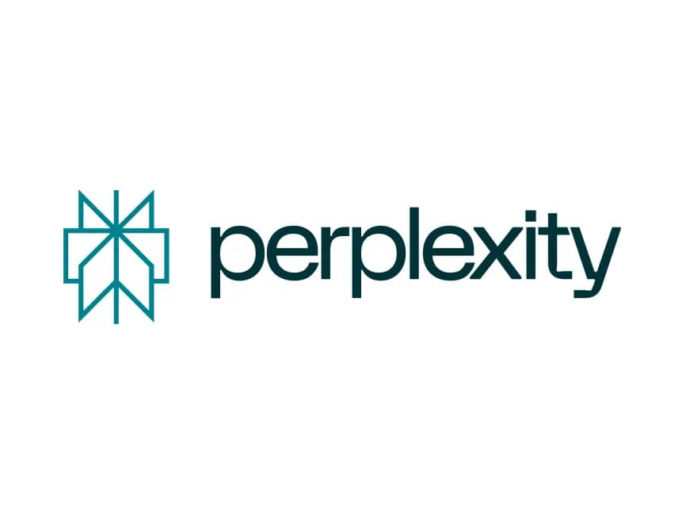
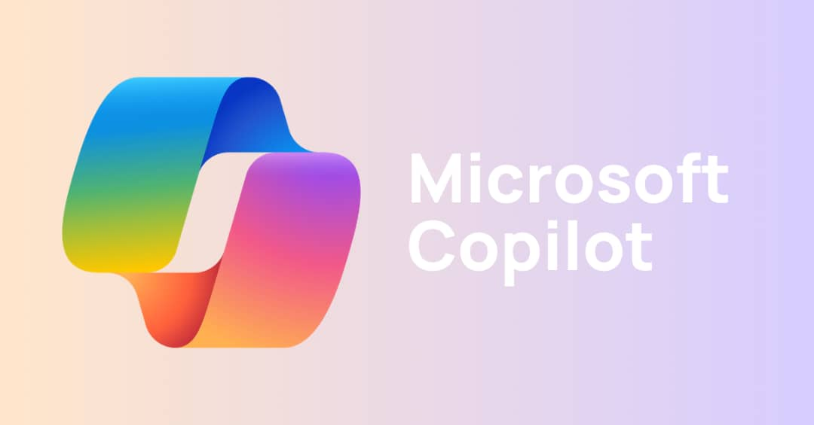
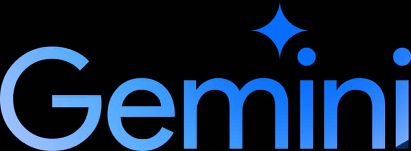

Motores de busqueda
Los Motores de Búsqueda son herramientas en línea que permiten a los usuarios buscar información en la web. Funcionan escaneando y recopilando datos de páginas web y luego indexando esa información para que los usuarios puedan encontrar lo que buscan. Los motores de búsqueda utilizan algoritmos para clasificar y mostrar los resultados más relevantes para una consulta, ejemplos populares son; Google y Yahoo, cuya base es a través de las palabras clave.
Loa Motores de Búsqueda impulsados por Inteligencia Artificial (IA) comenzaron a implementarse en los últimos años, ofreciendo experiencias de búsqueda más avanzadas y personalizadas en comparación con los motores de búsqueda tradicionales basados en palabras clave.
Algunas características clave de los motores de búsqueda inteligentes con IA incluyen:
- Comprensión del lenguaje natural utilizando técnicas avanzadas de procesamiento del lenguaje natural (NLP) para entender mejor las consultas de los usuarios.
- Personalización de resultados en función del historial de búsqueda, intereses y preferencias del usuario.
- Funcionalidades avanzadas como búsqueda por voz, búsqueda visual utilizando imágenes y respuestas a preguntas complejas.
- Prioridad en la privacidad, evitando el rastreo y perfilado de usuarios
Algunos motores de búsqueda con IA de los últimos años incluyen:
- Perplexity AI: se destaca por su precisión y capacidad para generar predicciones altamente precisas. Ofrecer información relevante de manera rápida y eficiente, sin publicidad intrusiva y sin necesidad de registro.
- Microsoft Bing utiliza IA para mejorar la experiencia del usuario, ofreciendo respuestas directas, sugerencias de búsqueda y correcciones ortográficas.
- Gemini: Es el asistente potenciado por IA de Google, integrado directamente en Gmail, Documentos y Hojas de cálculo, entre otros, con seguridad y privacidad de nivel empresarial. Ofrece servicio gratuito, des respuestas e imágenes de forma precisa.
- Andi Search: usa modelos lingüísticos avanzados para comprender consultas y predecir fuentes de información relevantes en tiempo real. Similar al razonamiento humano. Su interfaz de usuario innovadora muestra resultados de búsqueda junto con explicaciones claras y sin publicidad.
- Baidu: es el motor de búsqueda más grande de China, fundado por Robin Li y Eric Xu a mediados del año 2000. El nombre proviene de un poema chino que refleja la búsqueda incansable del amor. Baidu ofrece una variedad de servicios complementarios, como Baidu Image Search, Baidu Video Search, Baidu Maps, Baidu Wangpan, Baidu MP3 y Baidu Dictionary. Es la página más visitada en China y el cuarto motor de búsqueda más popular a nivel mundial. Baidu se destaca por su amplia base de datos, con más de 700 millones de sitios web indexados, y su sólido modelo de negocios.
- DuckDuckGo: es un motor de búsqueda independiente que se enfoca en proteger la privacidad de los usuarios y evitar la personalización de resultados basada en el historial de búsqueda. No rastrea las búsquedas ni el historial de navegación de los usuarios, lo que garantiza la privacidad de los usuarios. Utiliza su propio rastreador, DuckDuckBot, y también obtiene resultados de alrededor de 400 fuentes diferentes, incluidos buscadores como Bing o Yahoo, y servicios como Wikipedia. DuckDuckGo no almacena el historial de búsquedas de los usuarios. Aunque guarda las búsquedas, lo hace sin identificadores personales para mejorar los resultados.
- Al You.com: impulsado por inteligencia artificial, se enfoca en la privacidad y ofrece una experiencia de búsqueda fácil de usar, resúmenes generados por IA y una presentación de resultados sin publicidad.




Los Motores de Búsqueda Inteligentes impulsados por IA ofrecen experiencias de búsqueda más avanzadas, personalizadas y respetuosas con la privacidad en comparación con los motores de búsqueda tradicionales basados en palabras clave.
El aprendizaje automático (machine learning) es fundamental en los motores de búsqueda impulsados por inteligencia artificial (IA). Permite que estos sistemas mejoren su desempeño y precisión con la experiencia y el uso de datos.
Específicamente, el aprendizaje automático en los motores de búsqueda de IA se utiliza para:
- Comprender mejor las consultas de los usuarios mediante técnicas avanzadas de procesamiento del lenguaje natural (NLP).
- Personalizar los resultados de búsqueda en función del historial y preferencias del usuario.
- Reconocer entidades y semántica relacionadas con la búsqueda.
- Facilitar la búsqueda visual utilizando imágenes.
A medida que el sistema de IA aprende de las interacciones y datos recopilados, puede refinar continuamente sus algoritmos para generar resultados cada vez más relevantes y precisos de manera automática. Esto permite que los motores de búsqueda de IA vayan más allá de un enfoque basado en palabras clave y ofrezcan experiencias de búsqueda más inteligentes y contextuales.
Estos motores de búsqueda impulsados por inteligencia artificial ofrecen experiencias personalizadas, precisas y eficientes, revolucionando la forma en que interactuamos con la información en línea.